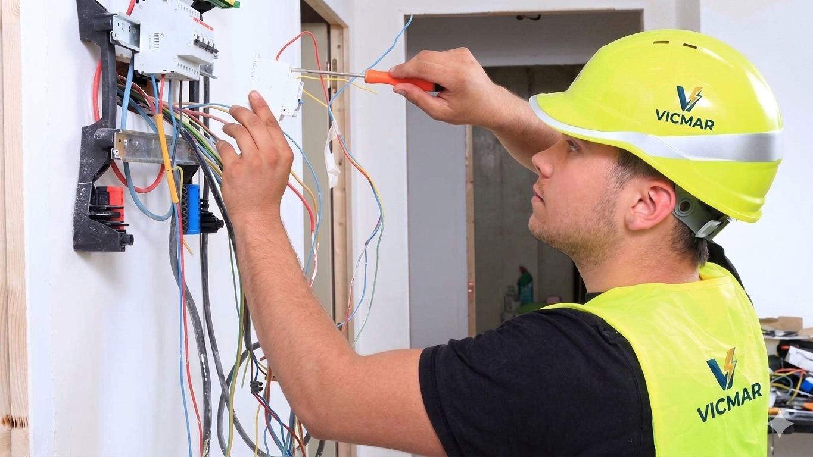
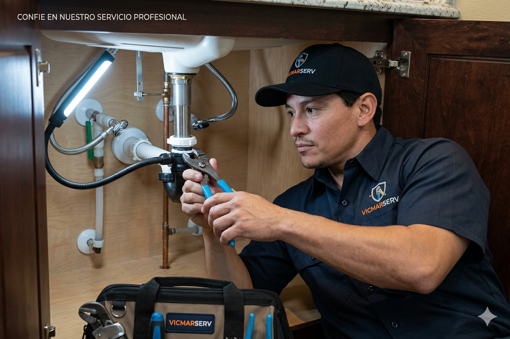

Electricidad
Renovación eléctrica
Reestructuración de acometidas, balanceo de fases e intervención de tableros eléctricos.
Una selección de trabajos técnicos, reparaciones y soluciones realizadas por Vicmar Services.
Aplicamos soluciones prácticas y responsables en diferentes tipos de instalaciones.

Reestructuración de acometidas, balanceo de fases e intervención de tableros eléctricos.

Diagnóstico de filtraciones y reparación de redes hidrosanitarias.

Intervenciones técnicas para conservar espacios residenciales y comerciales operativos.
Cuéntanos el alcance de tu trabajo y coordinamos una visita o cotización.